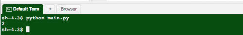
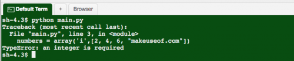
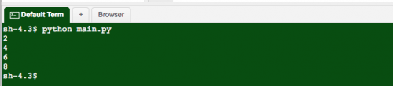
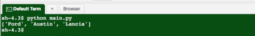
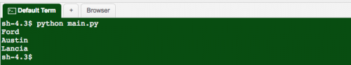
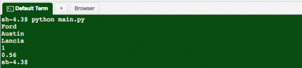
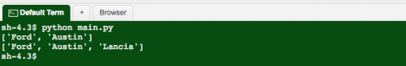
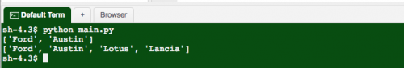
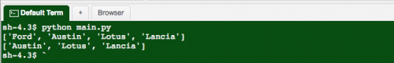

Массивы и списки являются одними из наиболее полезных структур данных в программировании. Сегодня я расскажу вам основы, а также покажу несколько простых примеров Python массивов.
Изучаем массивы в питоне - условия
Чтобы изучить рассматриваемые в этой статье концепции, вам не требуется заранее много знать. Базовые знания парадигмы программирования и Python желательны, но это не обязательно.
Рассматриваемые в этой статье принципы могут быть применены в любом языке программирования. Я буду демонстрировать примеры на Python. Это простой для изучения язык предоставляет превосходную платформу для понимания того, что происходит. В дополнение к этому существует отличный онлайн-интерпретатор Python.
Структура данных - это способ эффективного хранения данных. Легко запутаться, потому что структуры данных не являются типом данных, которые сообщают компилятору (или в случае Python интерпретатору), как их использовать. Структуры данных определяют операции, которые могут выполняться и реализуют конкретные правила и положения.
Возможно, вы слышали о линейных типах данных (элементы последовательны):
Аналогичным образом, списки часто содержат правила и методы для регулирования того, как они работают. Типы списков:
Существует множество различных структур данных. Возможно, вы слышали о бинарных деревьях, графах или хэшах.
Python массивы и списки представляют собой простой набор связанных значений, которые называются элементами. Обычно это любой тип данных, включая объекты или другие списки! При работе с массивами все данные должны быть одинаковыми - нельзя хранить вместе строки и целые числа. Вам почти всегда придется указывать, сколько элементов нужно хранить. Динамические массивы существуют, но проще начать с массивов фиксированной длиной.
Python несколько усложняет ситуацию. Он не всегда придерживается строгих определений структур данных. Большинство объектов в Python обычно являются списками, поэтому создавая массив, вы проделываете больше работы. Вот начальный код:
from array import array
numbers = array('i', [2, 4, 6, 8])
print numbers[0]
Работа с матрицей в питоне осуществляется через библиотеки numpy или pandas.
Первая строка импортирует модуль array, необходимый для работы с массивами. Вторая строка создает новый массив numbers и инициализирует его значениями 2, 4, 6 и 8. Каждому элементу присваивается целочисленное значение, называемое ключом или индексом. Ключи начинаются с нуля, поэтому [0] будет обращаться к первому элементу (2):

Вам наверно интересно, для чего используется «i». Это typecode, который сообщает Python, что массив будет хранить целые числа. Обычно подобные вещи в Python не нужны. Причина этого проста. Массивы в Python основаны на базовых C-массивах операционной системы. Это означает, что они быстрые и стабильные, но не всегда могут придерживаться синтаксиса Python.
Нельзя хранить элементы разных типов в этих массивах. Допустим, вы захотели сохранить строку «makeuseof.com»:
numbers = array('i', [2, 4, 6, "makeuseof.com"])
Это вызовет исключение при работе с Python массивом строк:

Вот как можно вывести все элементы:
print numbers

Этот метод доступа к элементам массива работает хорошо, и идеально подходит для решения задачи. Плохо то, что это - доступ ко всему массиву.
Каждый язык программирования реализует цикл, который идеально подходит для итерации (циклизации) над элементами списка.
Наиболее распространенные циклы while и for. Python делает это еще проще, предоставляя цикл for in:
for number in numbers:
print number
Обратите внимание на то, что вам не нужно обращаться к элементам по их ключу. Это лучший способ работы с массивом. Альтернативный способ перебора списка - это цикл for:
for i in range(len(numbers)):
print numbers[i]
Этот пример делает то же самое, что и предыдущий. Но в нем нужно указать количество элементов в массиве (len (cars)), а также передать i в качестве ключа. Это почти тот же код, который выполняется в цикле for in. Этот способ обеспечивает большую гибкость и выполняется немного быстрее (хотя цикла for in в большинстве случаев более чем достаточно).
Теперь, когда вы знаете, как работают Python двумерные массивы, давайте посмотрим на список. Иногда он может сбивать с толку, поскольку люди используют различные взаимозаменяемые термины, но списки - это массивы ... отчасти.
Список - это особый тип массива. Различие состоит в том, что списки могут содержать смешанные типы данных. Помните, массивы должны содержать элементы одного типа. Списки в Python просты:
cars = ['Ford', 'Austin', 'Lancia']
Этот синтаксис объявляет список под названием cars. В квадратных скобках объявляется каждый элемент списка. Каждый элемент является строкой, поэтому их объявляют внутри кавычек. Python знает, что это объект, поэтому оператор print выводит содержимое списка:
print cars
Сортировка Шелла в Python улучшает эффективность простой вставки за счёт предварительного расстояния между элементами.

Как и в случае с массивом, можно осуществлять Python сортировку массива с помощью циклов:
for car in cars:
print car

Настоящий фокус со списками - их смешанный тип. Добавьте дополнительные данные:
cars = ['Ford', 'Austin', 'Lancia', 1, 0.56]
Это даже не вызвало исключения:

Также просто добавить новые элементы в список (что невозможно с массивами):
cars = ['Ford', 'Austin']
print cars
cars.append('Lancia')
print cars

Можно объединить два списка в один:
cars = ['Ford', 'Austin']
print cars
other_cars = ['Lotus', 'Lancia']
cars.extend(other_cars)
print cars

Также легко удалить элементы Python ассоциативного массива, используя синтаксис remove:
cars = ['Ford', 'Austin', 'Lotus', 'Lancia']
print cars
cars.remove('Ford')
print cars
